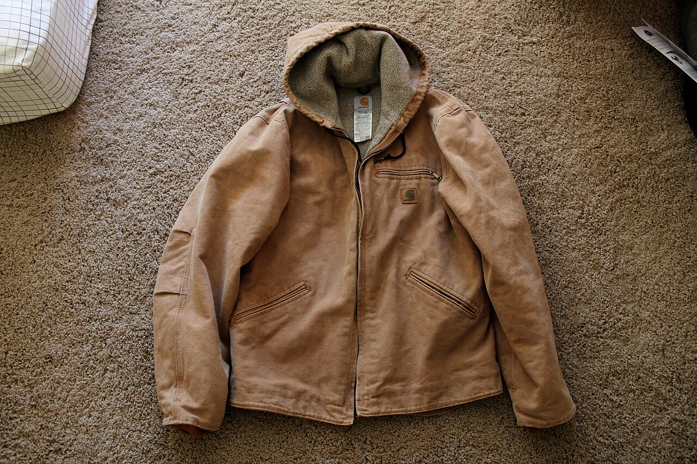
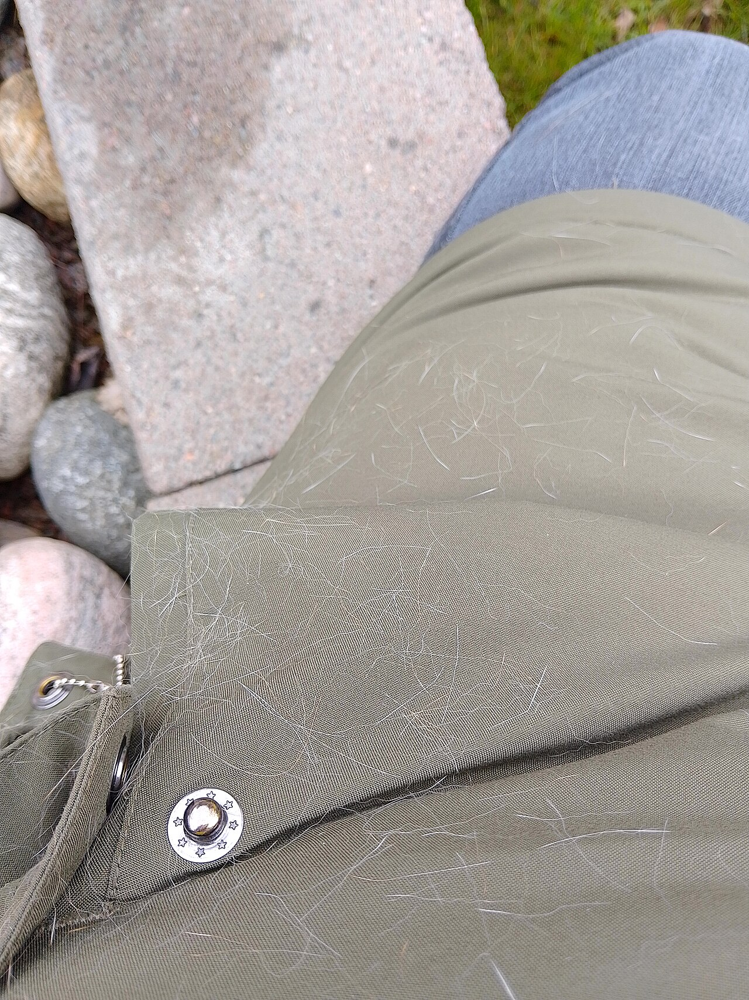

COTTONTRUCKER honors the intimate dialogue between raw organic materials and patient human hands. Discover bespoke commissions crafted at 181 Mercer Street.

Direct ethical alliances guarantee that each component entering our Mercer Street atelier supports regenerative agricultural practices and artisan heritage.

Every seam and edge is hand-inspected under high-magnification optics to ensure decades of metropolitan endurance.